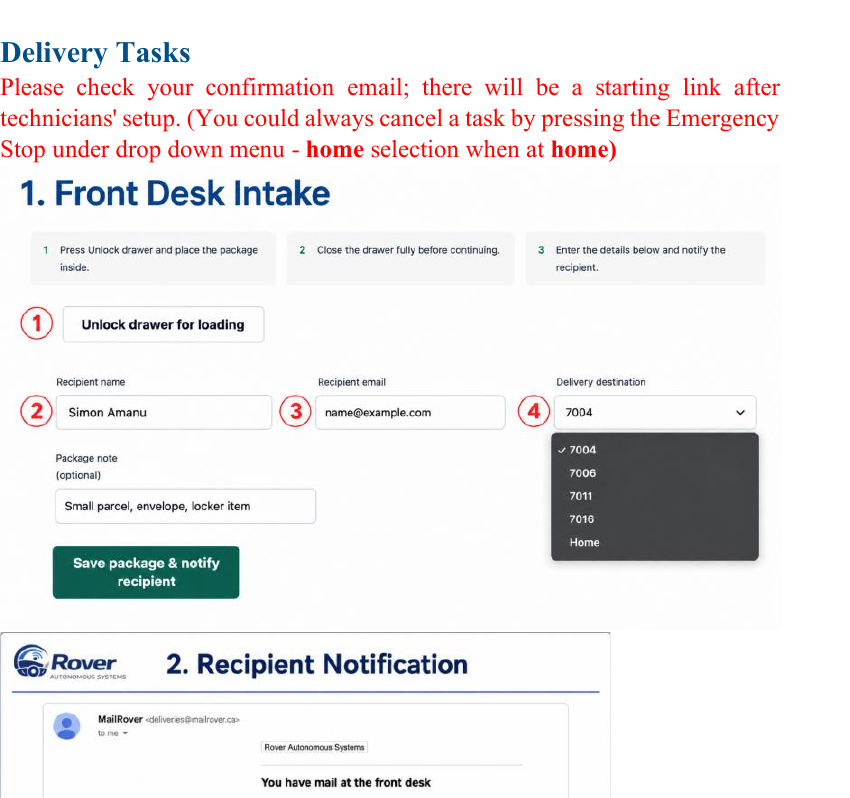
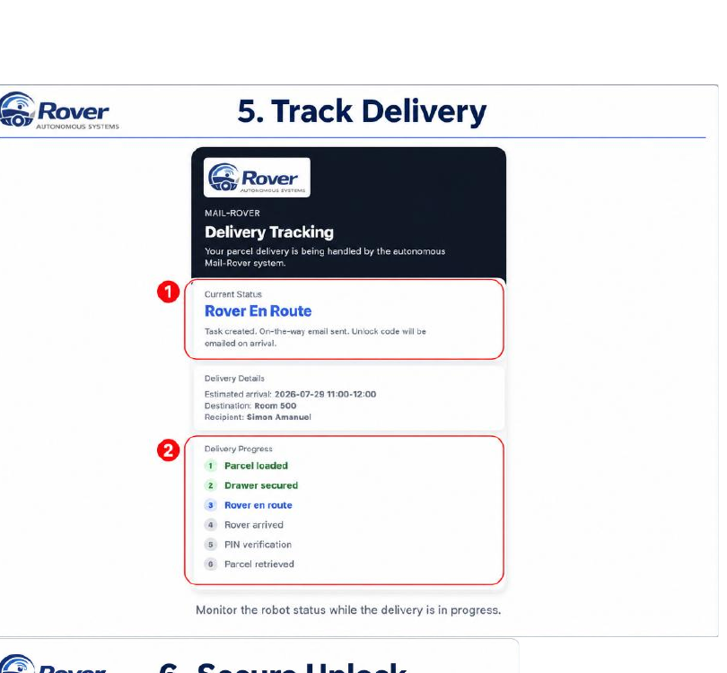
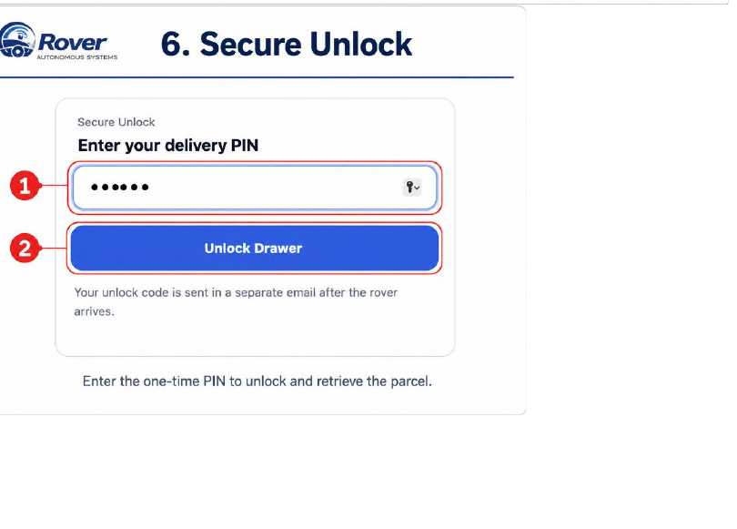
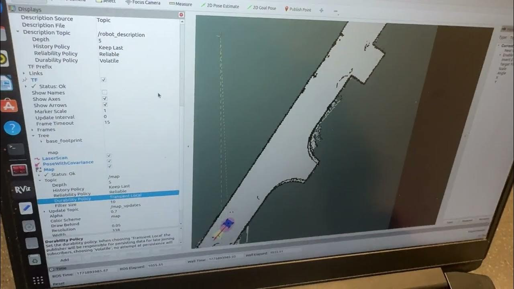
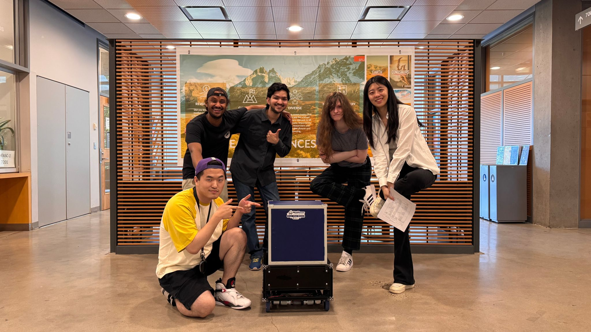

Web Application
Built staff and recipient interfaces for creating deliveries, viewing their progress and entering a parcel-retrieval PIN.
An indoor parcel-delivery robot developed by a five-person team at Simon Fraser University. The project combined autonomous navigation, a web application and a PIN-controlled parcel locker.

The team developed a prototype that allowed staff to register a parcel and select a predefined destination. The robot received the delivery task, navigated indoors and kept the parcel locker closed until the recipient entered the correct PIN.
My main work involved the web application, its connection to the robot and parcel lock, and shared electrical integration and testing.
Built staff and recipient interfaces for creating deliveries, viewing their progress and entering a parcel-retrieval PIN.
Connected delivery requests from the web application to the robot’s ROS 2 navigation workflow, working with the team on integration.
Implemented the connection between PIN verification, Raspberry Pi GPIO and the electronic parcel lock.
Worked with teammates to trace faults and test the delivery sequence across the web application, navigation and locker hardware.
I also contributed to low-voltage power distribution and wiring as the robot’s subsystems were brought together. This included work around the Raspberry Pi, motor controller, sensors and locker electronics, alongside other team members.
The browser interface provided staff and recipients with the controls needed for each stage of delivery.



The team tested individual subsystems and then checked their operation together. The project passed its final capstone demonstration.
Demonstrated travel to predefined indoor destinations without manual steering.
Tested the robot’s response to obstacles encountered along its route.
Checked that the parcel lock released following successful PIN verification.
Demonstrated the web application, navigation and locker control operating together.
The videos and photos below show how the robot’s movement, mapping and physical assembly developed during the project.
The final capstone demonstration showing the robot, navigation, browser interface and parcel-retrieval workflow operating together.
Open Final Demo Video ↗ The video may take a moment to load.These clips show earlier movement and mapping tests. The YouTube videos open in a separate tab.
▶
Watch on YouTube ↗
An early driving clip showing the robot’s movement and physical appearance during development.
▶
Open mobility clip ↗
A later mobility test recorded before mapping, delivery software and locker control were fully integrated.

▶ Watch mapping clip ↗An early mapping test showing the environment map being built and updated as the robot moves.
These photos show the robot during development and the team with the completed assembly after the final demonstration.

MailRover was a shared effort across navigation, software, electronics, mechanical assembly and testing. The contributions described above are my part of the team’s work.